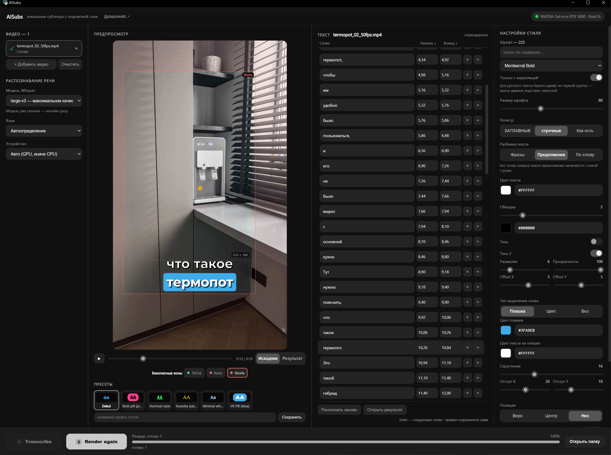
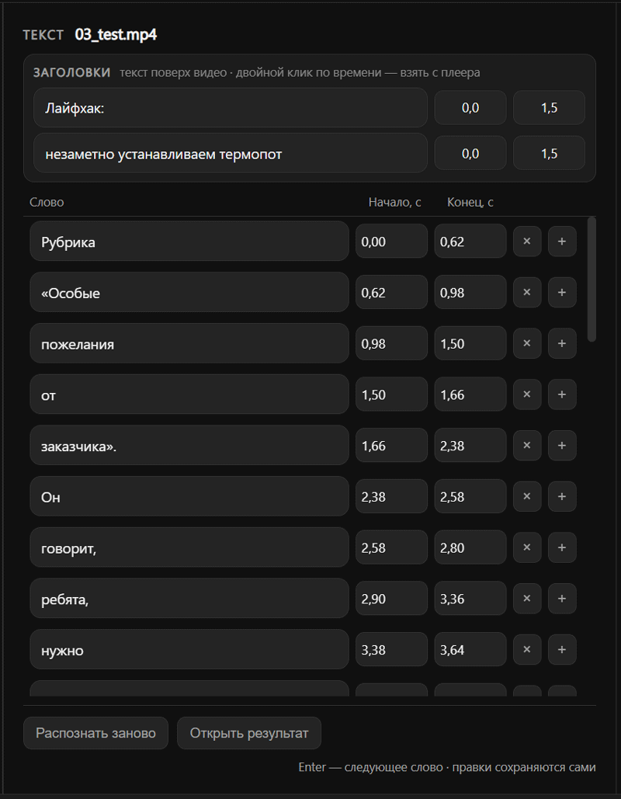
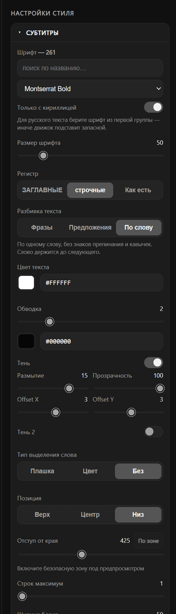
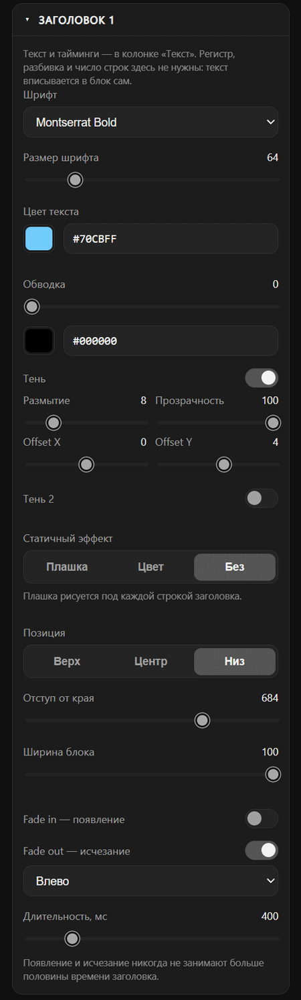
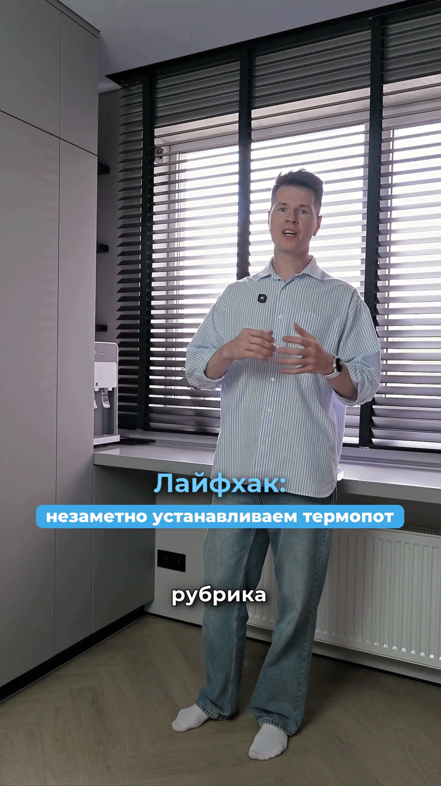

Распознаёт речь в видео, даёт поправить каждое слово и вшивает субтитры с подсветкой произносимого слова.
Всё считается на вашем компьютере: видео, звук и текст никуда не уходят. Аккаунт, подписка и API-ключ не нужны.
Windows 10 или 11 · около 5 ГБ на диске · видеокарта NVIDIA желательна, но не обязательна

Пакетная работа с роликами от распознавания до готового файла с вшитыми субтитрами.
Whisper с пословными таймкодами: модели от base до large-v3, автоопределение языка, работа на видеокарте NVIDIA с переходом на процессор, если CUDA недоступна.
Текст рядом с предпросмотром. Клик по слову перематывает видео на это место. Сомнительные слова подсвечены жёлтым, ошибки таймингов — красным.
Фразами по ширине блока, по предложениям без точек или по одному слову без знаков препинания. Текст в редакторе при этом не меняется.
Любой шрифт системы, плашка под словом или караоке-подсветка, обводка, межстрочный интервал и две независимые тени со смещением по осям.
Два текстовых блока со своими таймингами, стилями, положением по горизонтали и анимациями входа и выхода: плавно, выезд с любой стороны, приближение, растворение в размытии.
Рамки TikTok, Reels и Shorts прямо в предпросмотре. Кнопка «По зоне» сама ставит отступ так, чтобы текст с плашкой и тенями целиком попал в зону.
Несколько роликов в очереди, у каждого свой статус. Ошибка одного файла не останавливает остальные. Список, тексты и правки переживают перезапуск.
Язык интерфейса переключается в шапке и запоминается. Перевод — обычный словарь в одном файле, так что добавить третий язык может любой желающий.
Программа сама смотрит, не вышла ли версия новее, и пишет об этом в шапке. Скачивание и установка — по-прежнему вручную, ничего не делается за вашей спиной.
Слова группируются в фразы по тем же правилам, что и при рендере, поэтому на экране видно ровно то, что попадёт в видео.
Один экран и две кнопки внизу. Кнопка следующего шага подсвечена ярче.
Добавьте видео Перетащите файлы в окно или выберите их кнопкой. Можно сразу несколько.
Transcribe Речь распознаётся во всех файлах, где текста ещё нет. Прогресс виден у каждого ролика.
Поправьте текст Слова, начало и конец каждого. Правки сохраняются сами, прошлые версии остаются в истории.
Render Субтитры вшиваются во все файлы с готовым текстом. Результат попадает в папку output.
Четыре колонки, каждая занята своим делом.
| Колонка | Что в ней |
|---|---|
| Видео | Список файлов со статусами и прогрессом, выбор модели, языка и устройства. |
| Предпросмотр | Выбранное видео с субтитрами поверх, плеер, переключатель «Исходник / Результат», безопасные зоны и пресеты. |
| Текст | Слова выбранного файла с таймингами, поля заголовков. |
| Настройки стиля | Шрифт, регистр, разбивка, цвета, обводка, тени, подсветка, позиция, анимация и стили обоих заголовков. |



Обычный mp4 с вшитым текстом: его не нужно ничем дополнять, он сразу грузится в TikTok, Reels или Shorts.

Python и ffmpeg отдельно ставить не нужно: установщик кладёт портативное окружение внутрь папки программы и системный Python не трогает.
Скачайте репозиторий Кнопка «Скачать ZIP» вверху или git clone. Распакуйте в любую папку.
Запустите setup.bat Он скачает портативный Python, ffmpeg и выбранную модель распознавания.
Запускайте run.bat Дальше интернет нужен только для загрузки другой модели.
git clone https://github.com/Rennart2025/Rennart_aisubs-local.git
cd Rennart_aisubs-local
setup.bat
run.batПрерванную установку можно продолжить повторным запуском setup.bat. Обновление — распаковать новый архив поверх папки: окружение, модели и ваши данные остаются на месте.
| Что | Откуда | Куда |
|---|---|---|
| Портативный Python 3.11 | python.org | python/ |
| Библиотеки Python | PyPI | python/ |
| ffmpeg | gyan.dev | ffmpeg/ |
| cuBLAS и cuDNN, если найдена NVIDIA | PyPI, пакеты NVIDIA | python/ |
| Модели распознавания | Hugging Face, репозитории Systran/faster-whisper-* | models/whisper/ |
| Операционная система | Windows 10 или 11, 64 бита |
| Видеокарта | NVIDIA с CUDA желательна. Без неё распознавание идёт на процессоре — работает, но медленнее |
| Место на диске | около 5 ГБ на окружение и крупную модель |
| Интернет | только на время установки и разовой загрузки модели |
| Дополнительно | Visual C++ Redistributable 2015–2022 — на большинстве систем уже стоит |
Подробности, описание всех настроек и формат пресетов — в README репозитория.
{kind=link}
{kind=link}
{kind=link}